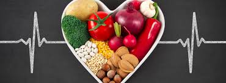

| OPCIONES DE TRATAMIENTO | RECOMENDACIONES | |
| El tratamiento inicial de la obesidad incluye cambios en la pauta alimentaria y el aumento de ejercicio físico. Junto a estas estrategias y, en función del grado de obesidad, se pueden administrar fármacos u optar por la cirugía bariátrica con la finalidad de potenciar la pérdida de peso. | Evita el consumo de alimentos que contengan muchas calorías, como las frituras, bebidas azucaradas, alimentos industrializados y “comidas rápidas”, son alimentos que aportan una gran cantidad de energía, comerlos en exceso causa aumento de peso. | |
| Los planes de tratamiento para los trastornos de la alimentación incluyen psicoterapia, atención y controles médicos, asesoramiento nutricional, medicamentos o una combinación de estos enfoques. Los objetivos habituales del tratamiento. | se entiende por recomendación nutricional la cantidad de un nutriente determinado capaz de facilitar un normal funcionamiento del metabolismo del ser humano en casi la totalidad de una población. | |
| El tratamiento cardiovascular varía y puede incluir cambios en el estilo de vida, medicamentos, cirugías, colocación de stent, marcapasos y ablación. | Consumir alimentos frescos y variados, que incluyan en cada una de las comidas frutas enteras y verduras. Reducir el consumo de "alimentos de paquete", comidas rápidas y bebidas azucaradas . |  |